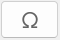
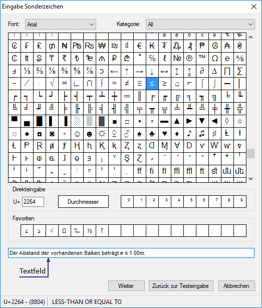
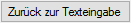

Einfügen von Zeichen, die nicht über die Tastatur ausgewählt werden können. Zur Auswahl wird der Dialog Eingabe Sonderzeichen mit allen verfügbaren Zeichen der gewählten Schriftart geöffnet. Wenn die Eingabe Text enthält [Text eingeben oder vorh. Text anklicken], wird dieser in das Textfeld im Dialog übernommen, wo Sie den Text mit den gewünschten Sonderzeichen ergänzen können.
Optionen im Dialog "Eingabe Sonderzeichen"
 |
Font
Auswahl der Schriftart für den gesamten Text.
Kategorie
Auswahl der Sprach- und Schreibsysteme.
Wenn in der Kategorie-Auswahl All gewählt ist, werden alle Zeichen einer Schriftart angezeigt. Wenn Sie eine abweichende Kategorie auswählen, werden nur die Zeichen dieser Kategorie angezeigt.
Zeichentabelle
Wenn Sie ein Sonderzeichen anklicken, wird dieses in das Textfeld (s. weiter unten) übernommen.
Direkteingabe
U+
Eingabe des Unicodes in hexadezimaler Schreibweise. Wenn Sie ein Sonderzeichen anklicken, wird der entsprechende Unicode hier eingetragen. Ob das entsprechende Zeichen vorhanden ist, hängt von der jeweiligen Schriftart ab. Zulässig sind Werte in den Bereichen 0 ... 9 und A ... F. Bei einer falschen Eingabe erscheint ein Warnhinweis .
Einfügen eines Durchmesser-Zeichens. Das Zeichen wird erst korrekt dargestellt, wenn es auf der Zeichnung abgelegt wird.
Hochzahlen
Einfügen von Hochzahlen. Die Zahl wird erst korrekt dargestellt, wenn sie auf der Zeichnung abgelegt wird.
Favoriten
Ziehen Sie ein häufig genutztes Zeichen per Drag&Drop auf ein freies Feld. Ist das Feld belegt, wird das Zeichen ersetzt.
Textfeld
Tippen Sie hier den Text mit den gewünschten Sonderzeichen ein.

Schließt den Dialog. Der im Textfeld eingegebene Text wird in die Eingabe übernommen und kann ausgerichtet werden. [Winkel].

Schließt den Dialog. Der im Textfeld eingegebene Text wird in die Eingabe übernommen und kann weiterbearbeitet werden. [Text eingeben oder vorh. Text anklicken].

Schließt den Dialog. Alle Änderungen werden verworfen.
Siehe auch:
Zugehörige Referenzen: